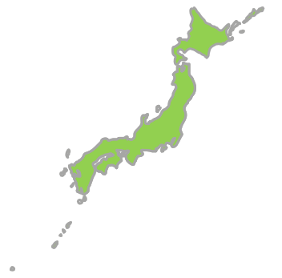

Jalur Gemilang（ジャルル・グミラン）― マレー語で「栄光の縞」
🌏 マレーシアってどんな国？
東南アジアの中心に位置するマレーシアは、マレー系・中国系・インド系が共存する多民族・多文化国家。熱帯雨林の大自然、世界遺産の古都、近代的な都市が一度に楽しめるのが最大の魅力です。
年間約40万人の日本人が訪れる人気旅行先。ビザ不要・英語が通じやすい・物価が安いの三拍子が揃い、初めての海外旅行先としても定番。日本食レストランも豊富で食事の心配も少ない。
🗺️ 主要都市
🌤️ ベストシーズン
年間を通して25〜32℃の常夏。地域によって雨季・乾季が異なります。
🔰 基本データ
👤👤👤👤👤👤
1.25億人
3,350万人

37.8万km²

33万km²
ベストシーズン
マレーシアは年間を通して27〜29℃の常夏。地域によって雨季・乾季の時期が異なります。
色が濃いオレンジほど気温が高く、黄金色は比較的涼しい月です。
✅ ベスト：3〜9月（乾季）／ 雨季でもスコール程度で観光可能
✅ ベスト：11〜4月（西海岸の乾季） ／ 9〜10月は北東モンスーンの影響で雨多め
✅ ベスト：1〜5月（乾季・ダイビング最適） ／ 9〜11月は雨季で海が荒れやすい
💡 航空券が安い時期
6〜7月はLCCの航空券が安くなりやすい時期。1月中旬〜3月も比較的ねらい目。年末年始・GW・お盆は高騰するので要注意。
旅行費用の目安
費用の内訳
エアアジア・バティックエアが安い
5つ星でも1〜2万円台が多い
レストランでも1,000〜2,000円程度
タクシー初乗り約250円〜
有料でも入場料は安い
ホテル・カフェのWi-Fiは無料が多い
💡 節約ポイント
・両替は市内の両替専門店が最もレートが良い。到着直後の分だけ空港で両替し残りは市内で
・チップ不要（特別なサービス時のみ任意）
・屋台・フードコートで本格グルメが格安
・Grabアプリはタクシーより安く安心
旅の実用情報
入国時の注意
💡 MDAC（デジタル入国カード）
マレーシア入国の3日前からオンライン登録が必要。子供も登録が必要。
URL: imigresen-online.imi.gov.my/mdac/main（2026年5月時点）
持ち物チェック
- 変換アダプター（BFタイプ）
- 日焼け止め・サングラス
- 折りたたみ傘（スコール対策）
- ポケットティッシュ（有料トイレ対策）
- 常備薬（胃腸薬など）
- 夏服が基本（薄手の長袖も）
- モスク入場時：肌の露出を避ける
- 女性：スカーフ持参が便利
- 冷房対策に1枚上着
- スマートカジュアルも1着あると◎
文化・マナー
現地交通ガイド
マレー語 旅行フレーズ集
| 日本語 | マレー語 / 読み方 | |
|---|---|---|
| 👋 あいさつ | ||
| こんにちは | Selamat siangスラマッ シアン | |
| 元気ですか？ | Apa khabar?アパ カバル？ | |
| 元気です。あなたは？ | Khabar baik. Awak?カバル バイク。アワッ？ | |
| バイバイ | Selamat tinggalスラマッ ティンガル | |
| 綺麗ですね！ | Cantik sekali!チャンティッ スカリ！ | |
| 🙏 基本表現 | ||
| ありがとう | Terima kasihトゥリマ カシ | |
| ごめんなさい | Minta maafミンタ マーフ | |
| 大丈夫 | Tidak apa-apaティダッ アパアパ | |
| はい / いいえ | Ya / Tidakヤー / ティダッ | |
| 名前は〜です | Nama saya ～ナマ サヤ ～ | |
| 名前は何ですか？ | Siapa nama awak?シアパ ナマ アワッ？ | |
| 🍽️ レストラン・ショッピング | ||
| おいしい！ | Sedap!スダッ！ | |
| あまり好きじゃない | Saya tak suka sangatサヤ タッ スカ サンガッ | |
| おすすめは？ | Apa yang disyorkan?アパ ヤン ディショルカン？ | |
| 辛い | Pedasプダス | |
| 辛くない | Tidak pedasティダッ プダス | |
| お会計お願いします | Boleh minta bil?ボレ ミンタ ビル？ | |
| カード払い | Kad kreditカッ クレディッ | |
| 現金 | Tunaiトゥナイ | |
| トイレどこですか？ | Di mana tandas?ディ マナ タンダス？ | |
| これください | Saya nak iniサヤ ナッ イニ | |
| いくらですか？ | Berapa harga ini?ブラパ ハルガ イニ？ | |
| 結構です | Tak nak, terima kasihタッ ナッ、トゥリマ カシ | |
| 高いです、安くしてください | Mahal, boleh murah sikit?マハル、ボレ ムラ シキッ？ | |
| ここに行きたい | Saya nak pergi ke siniサヤ ナッ プルギ ク シニ | |
| 🔢 数字 | ||
| 0 | Kosongコソン | |
| 1〜5 | Satu・Dua・Tiga・Empat・Limaサトゥ・ドゥア・ティガ・エンパッ・リマ | |
| 6〜10 | Enam・Tujuh・Lapan・Sembilan・Sepuluhエナム・トゥジュ・ラパン・スンビラン・スプル | |
🃏 マレー語 単語カード
旅行前にフレーズをマスターしよう！
印刷できる単語カードを販売中。
マレーシア グルメ10選
都市別観光スポット
🃏 マレー語 単語カードで旅を10倍楽しもう
現地で使える厳選フレーズを単語カードにまとめました。
旅行前にサクッとマスターできます。